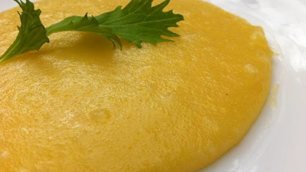

Delícias de Minas
Angu

Angu
Ingredientes
- 2 litros de água fervendo
- 500g de fubá
Porções
Serve 15 pessoas
Tempo de Preparo
40 Minutos
Passo a Passo
- Dissolva o fubá num pouco de água fria, mexendo com colher de pau
- Junte a água fervendo e, mexendo sem parar, em fogo alto
- Quando a massa começar a grudar no fundo da panela, reduzir a chama e continuar a mexer até soltar do fundo da panela
- Molhe uma forma e coloque o angu
- Deixar esfriar um pouco e virá-lo numa travessa